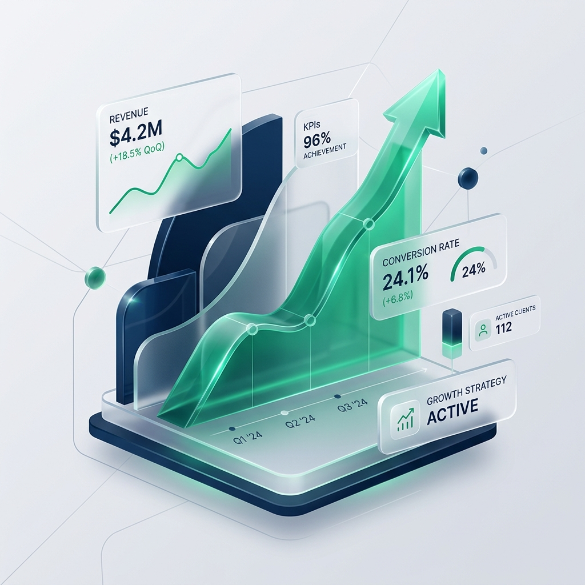

Cara Menghitung Food Cost Ideal untuk Menjaga Margin Laba Kafe
Pelajari rumus menyusun HPP per resep secara akurat dan trik menekan pemborosan bahan mentah di dapur kafe hingga di bawah 30%.
SelengkapnyaKami membantu UMKM, restoran, kafe, brand makanan, dan bisnis berkembang di Indonesia meningkatkan omset, menyederhanakan operasional, dan membangun sistem pertumbuhan yang kokoh.

Solusi konsultasi bisnis komprehensif dan taktis untuk membimbing bisnis Anda naik ke level berikutnya secara berkelanjutan.
Pembuatan business plan terukur, roadmap pertumbuhan jangka panjang, pemosisian pasar, serta strategi menghadapi kompetitor lokal.
KonsultasiPemasaran digital terintegrasi, optimasi sosial media, aktivasi brand, pembuatan konten, dan sistem akuisisi pelanggan baru.
KonsultasiManajemen arus kas (cash flow), penyusunan budget operasional, analisis titik impas (break-even), serta kalkulasi rasio profitabilitas.
KonsultasiRekayasa menu (menu engineering), kalkulasi HPP/food cost presisi, standardisasi resep, serta penyusunan SOP dapur dan operasional outlet.
KonsultasiEfisiensi alur kerja (workflow optimization), otomatisasi administrasi harian, audit stok, dan peningkatan produktivitas tim outlet.
KonsultasiPembuatan website premium, implementasi WhatsApp CRM, setup POS kasir digital, serta integrasi sistem otomatisasi operasional bisnis.
KonsultasiKami tidak sekadar memberikan saran teoretis, melainkan solusi operasional riil yang berdampak langsung pada pertumbuhan profit bisnis Anda.
Setiap rekomendasi disusun berdasarkan audit data internal bisnis Anda dan statistik pasar terkini, bukan asumsi belaka.
Kami membantu Anda mengeksekusi rencana aksi di lapangan, mulai dari setup sistem kasir digital hingga mentoring tim operasional.
Tim konsultan kami memiliki pengalaman nyata bertahun-tahun dalam mengelola bisnis kuliner, retail, dan startup di Indonesia.
Tidak ada solusi satu-ukuran-untuk-semua. Kami merumuskan strategi kustom yang disesuaikan dengan skala keuangan dan target bisnis Anda.
Seluruh laporan audit, biaya, dan kemajuan implementasi dapat dipantau secara transparan melalui papan kolaborasi digital.
Kami fokus pada peningkatan Key Performance Indicators (KPI) krusial bisnis seperti kenaikan laba kotor dan penghematan biaya HPP.
4 langkah sistematis untuk mentransformasi bisnis Anda dari tahapan asesmen awal hingga pendampingan hasil nyata.
Menganalisis kondisi kesehatan finansial, operasional outlet, efisiensi tim, dan efektivitas pemasaran guna menemukan celah masalah utama.
Merumuskan draf proposal pemecahan masalah secara tertulis, meliputi perhitungan HPP baru, skema marketing promo, dan timeline implementasi.
Pendampingan intensif saat peluncuran SOP baru di lapangan, pelatihan kasir/dapur, setup software keuangan, hingga peluncuran campaign digital.
Menganalisis performa bisnis setelah implementasi strategi lewat laporan mingguan, guna memastikan peningkatan profit berkelanjutan.
Keahlian mendalam kami menjangkau berbagai sektor komersial krusial di pasar ritel dan digital Indonesia.
Bukti nyata bagaimana kolaborasi taktis menghasilkan akselerasi performa keuangan yang signifikan bagi mitra bisnis kami.
Kepuasan para pemilik bisnis dan wirausahawan adalah kebanggaan terbesar dalam perjalanan kami.
Gunakan alat interaktif kami secara instan untuk mendiagnosis kesehatan finansial, harga jual, dan efisiensi operasional bisnis Anda.
Ketahui berapa jumlah unit produk yang wajib terjual untuk menutupi biaya operasional bulanan Anda.
Hitung efisiensi porsi resep bahan makanan Anda untuk menjaga margin keuntungan menu restoran/kafe tetap aman.
Menghitung margin keuntungan kotor serta selisih kenaikan harga jual (markup) dari biaya beli produk Anda.
Jawab 5 pertanyaan dasar ini untuk mengevaluasi celah kritis sistem bisnis Anda.
Deskripsi analisis skor kesehatan bisnis Anda.
Dapatkan strategi gratis, taktik operasional kuliner, dan tips mengelola arus kas langsung dari jurnal pakar konsultan kami.
Pelajari rumus menyusun HPP per resep secara akurat dan trik menekan pemborosan bahan mentah di dapur kafe hingga di bawah 30%.
SelengkapnyaPenyebab utama kegagalan finansial bisnis berkembang bukan kurangnya penjualan, melainkan pencampuran rekening operasional dan utang buruk.
SelengkapnyaBagaimana menyambungkan stok kasir fisik POS dengan e-commerce dan automasi follow-up pelanggan menggunakan CRM WhatsApp.
SelengkapnyaJawaban atas pertanyaan-pertanyaan mendasar yang sering diajukan wirausahawan sebelum bermitra dengan kami.
Konsultasikan tantangan bisnis Anda saat ini secara langsung dengan tim senior expert kami selama 30 menit tanpa dipungut biaya apapun.
+62 858-7112-1712
hello@umkmgrowthlab.co.id
Sudirman Central Business District (SCBD), Tower 5B Lantai 12, Jakarta Selatan, DKI Jakarta